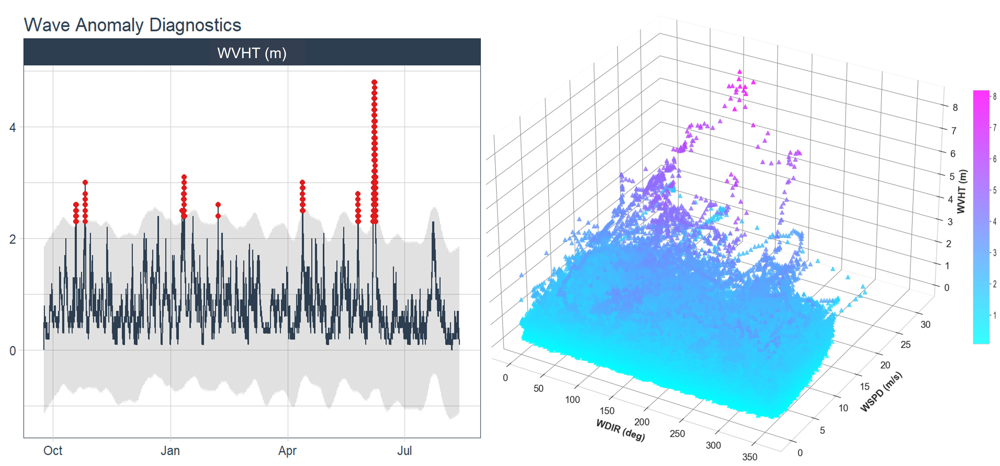

This pipeline seamlessly models the spatial and temporal patterns across multiple canopy growth traits,
and determines the optimum growth duration for efficient High Throughput Plant Phenotyping.
This pipeline automates the extraction of multiple plant funtional traits from evapotranspiration time series,
and derives plant-environment sensitivity indices from a multi-output neural network model.
An ensemble-learning and entropy-based optimization algorithm is proposed
to determine the optimum sampling frequency for functional plant phenotyping
Using entropy-based image segmentation and a suite of self-supervised learning methods,
annotation-efficient crop insect pest classification has been performed from field images.

A multi-step LSTM model is employed to forecast wave height from an extensive meteorological-oceanographic feature set
and detect extreme events using a genetic-algorithm aided classifier.
To aid maritime domain awareness, this pipeline reads the RF signatures every five minutes
that are scanned by an R/V mounted SDR, and performs a feature-learning based random forest classification of the detected frequencies.